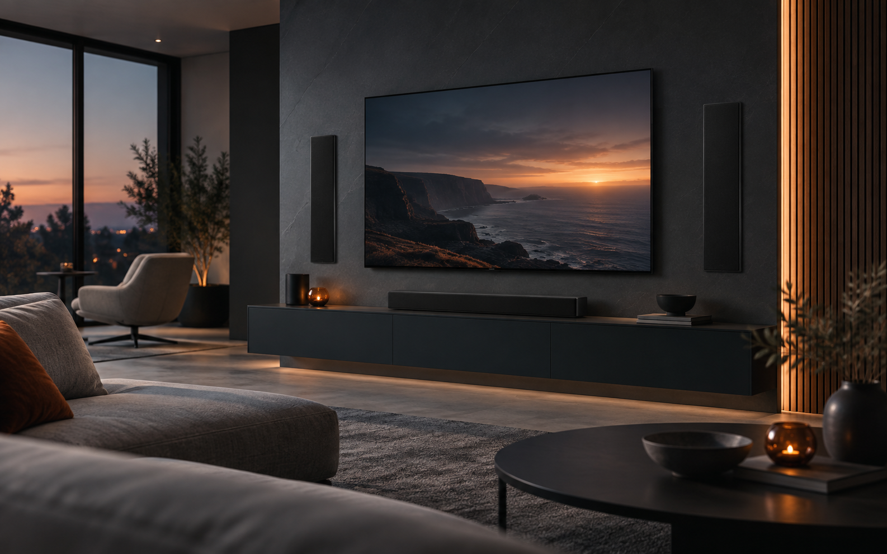
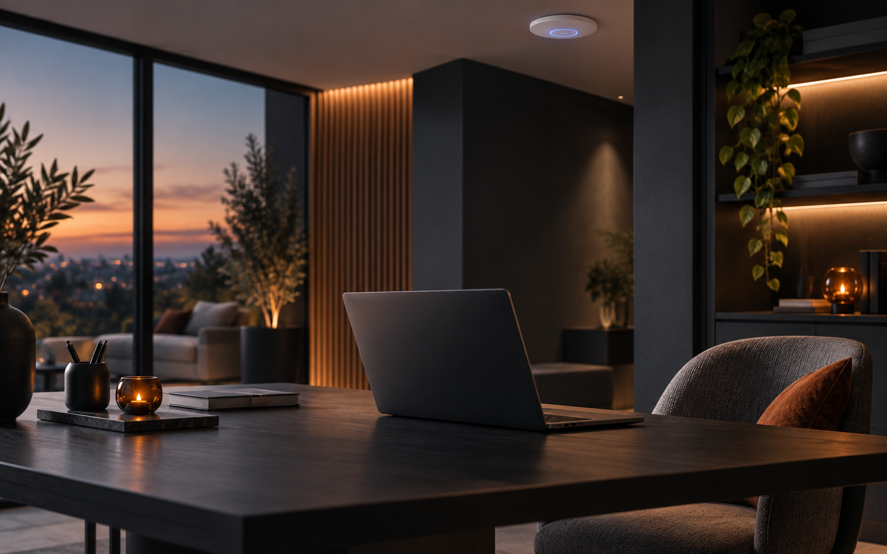
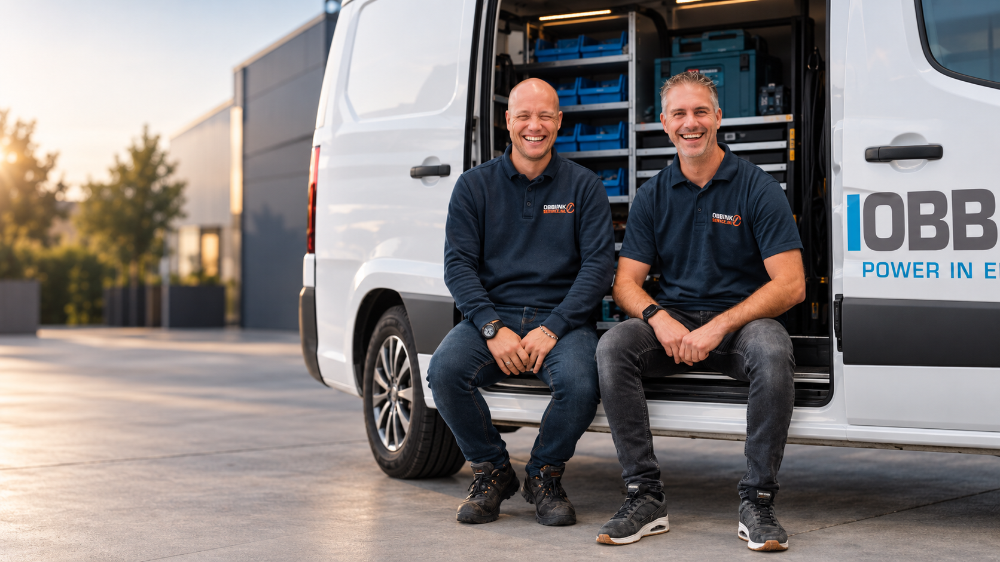

Van techniek naar totaalbeeld
De beste techniek hoeft niet de meeste aandacht te trekken.
Een televisie, audiosysteem of netwerkoplossing moet vooral goed functioneren én passen bij de ruimte waarin u leeft of werkt. Daarom kijken we bij ElectroStylist verder dan het product alleen.
We denken na over plaatsing, zichtlijnen, kabels, bediening, bereikbaarheid voor service en een nette oplevering. Zo ontstaat een oplossing die technisch klopt en visueel rustig blijft.
We kijken eerst naar uw woning, interieur, gebruik en wensen.
Daarna bepalen we welke technische oplossing logisch en praktisch is.
Montage, bekabeling, configuratie en afwerking vormen samen de oplevering.
Waar ElectroStylist waarde toevoegt
Techniek wordt onderdeel van de ruimte.
ElectroStylist is bedoeld voor situaties waarin uitstraling, comfort en technische kwaliteit even belangrijk zijn.

Een goede beeld- en geluidsoplossing draait om meer dan alleen apparatuur. Met de juiste plaatsing, bekabeling en afwerking zorgen we voor comfort en jarenlang kijk- en luisterplezier.

Goede wifi is onmisbaar in huis en op het werk. Met de juiste dekking, apparatuur en plaatsing zorgen we voor een stabiele verbinding die overal werkt en netjes uit het zicht blijft.

Roy en Dennis zijn twee van onze ElectroStylisten. Met hun passie voor beeld, geluid en strakke afwerking zorgen zij dat techniek niet alleen goed werkt, maar ook mooi in de ruimte past.
Onze aanpak
Van idee naar een oplossing die klopt.
Een goed resultaat begint met begrijpen wat u wilt bereiken. Pas daarna komt de techniek.
We bespreken de ruimte, wensen, bestaande situatie en wat voor u belangrijk is in dagelijks gebruik.
We brengen techniek, plaatsing, aansluitingen en bediening samen tot een praktisch voorstel.
Onze technische organisatie verzorgt montage, aansluiting en configuratie.
We zorgen dat de oplossing begrijpelijk werkt en dat u bij vragen bij Obbink Service terechtkunt.
Een ruimte of project in gedachten?
Begin niet met het product. Begin met wat u wilt bereiken.
Vertel ons wat u wilt verbeteren of realiseren. Dan kijken we samen welke techniek daarbij past en hoe we die het beste kunnen integreren.